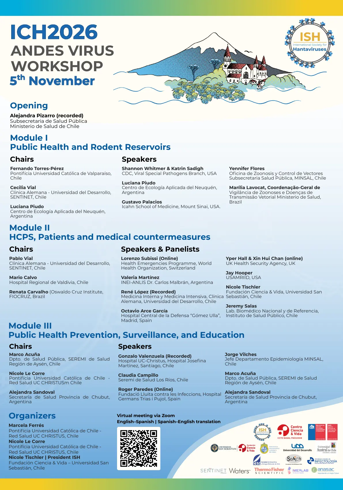

ICH2026 · November 5, 2026
ANDV Workshop
The Andes Virus Workshop brought together researchers, clinicians and public health professionals at Hotel Bellavista in Puerto Varas, Chile, with virtual participation and simultaneous English–Spanish translation.
Public workshop materials
Andes virus: research & public health.
Thursday, November 5, 2026 · 08:00–16:30 · Hotel Bellavista, Puerto Varas, Chile.
Organized by Marcela Ferrés, Nicole Le Corre and Nicole D. Tischler, the workshop addressed reservoirs and public health, patients and hantavirus cardiopulmonary syndrome, and prevention, follow-up and public education.
The detailed workshop programme is public. Presentation slides and the recording will be added when released by the organizers.


November 5, 2026
Workshop programme
Times and modules follow the public workshop programme. All times are local to Puerto Varas, Chile.
Thursday
November 5Registration
Hotel Bellavista
Welcome from the organizers
Opening of the Andes Virus Workshop
Module I · Reservoirs and public health
Strategies for ANDV detection: from reservoirs to outbreaks; surveillance and public health.
Module II · Patients and HCPS
Hantavirus infection detection, therapeutic strategies, medical countermeasures and vaccines, with panel discussion.
Module III · Contacts: prevention, follow-up and public education
Management of survivors, follow-up of exposed individuals, monitoring and public education, with panel discussion.
Closing remarks
Local Organizing Committee